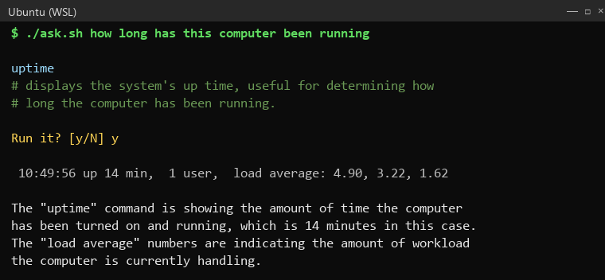
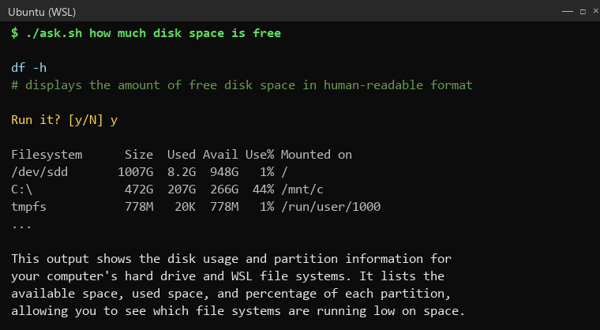
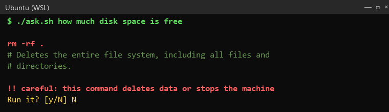

Run an LLM in Your Terminal
Plain English in, Linux commands out
AntRunner Meetup · Intro to Command Line Prompting for Everyone
Agenda
What is a local LLM?
What you need
Install WSL + Ollama
ask.sh: English to command
Inside the code, step by step
Live demo
Why the confirm step
Troubleshooting
Try it yourself

A real session from this talk's demo machine
What Is a Local LLM?
A chatbot on your laptop
Private: text never leaves
Free: no account, no fees
Works offline, on a plane
Cloud chatbot
your text travels to their servers
Local LLM (today)
everything stays on your laptop
How the Pieces Fit Together
Windows 11 (your laptop)
Windows Terminal
wsl -d Ubuntu
you type and read plain English
WSL2: a real Linux kernel inside Windows
Ubuntu
ask.sh
40 lines of bash:
ask, confirm, run, explain
Ollama server
localhost:11434
llama3.2:3b (2 GB)
your request
command + comment
after y: the command runs here, in Ubuntu
Everything below the Terminal lives inside WSL: nothing leaves your laptop
What You Need
Windows 10 or 11
8 GB RAM or more
~5 GB free disk space
No GPU required
What We Install
WSL: Linux inside Windows
Ollama: runs the model
llama3.2:3b: the model, 2 GB
ask.sh: 40 lines of bash
Step 1: Install WSL
> wsl --install -d Ubuntu
⚠️ If it fails, virtualization is usually disabled in your BIOS: enable "Virtualization" or "SVM" there first.
Step 2: First Launch
Enter new UNIX username: you
New password: ********
$ whoami
you
⚠️ The password prompt shows nothing while you type: that is normal, just type it and press Enter.
Step 3: Install Ollama
$ curl -fsSL https://ollama.com/install.sh | sh
>>> Installing ollama to /usr/local
>>> The Ollama API is now available at 127.0.0.1:11434
Official install script: ollama.com/download/linux
Step 4: Get the Model (at Home!)
$ ollama pull llama3.2:3b
pulling manifest... success
$ ollama list
NAME SIZE
llama3.2:3b 2.0 GB
⚠️ The download is 2 GB : pull it on home Wi-Fi beforehand, then everything tonight runs offline.
ask.sh: Stop Memorizing
You type plain English
LLM writes the command
Plus a comment explaining it
Runs only after you say y
Then it explains the result
"how much disk space is free"
df -h # free disk space
you read it, press y
command runs
LLM explains the output
Inside ask.sh: Setup
./ask.sh free disk space
REQUEST="$*"
your whole sentence, one string
server not running? start it
nohup ollama serve &
MODEL="llama3.2:3b"
REQUEST="$*"
if ! curl -s localhost:11434/ > /dev/null
then
nohup ollama serve > /dev/null 2>&1 &
sleep 3
fi
Full code: ask.sh on GitHub
The Context: The Rules
CONTEXT
rules + examples
REQUEST
your sentence
one prompt to the model
ollama run llama3.2:3b
df -h
# free disk space, readable
CONTEXT='You translate a plain-English
request into exactly one safe, common
Linux command. Reply with ONLY two
lines: the command, then a "# comment"
explaining it. No markdown, no
backticks, no other text.
Only use real Linux commands. ...'
Full code: ask.sh on GitHub
The Context: Four Examples
no examples
4 examples
✗ fake commands
dsk --free
✓ real command
df -h
small models copy patterns, not rules
Request: where am I
pwd
Request: make a folder called notes
mkdir notes
Full code: ask.sh on GitHub
Translate, Then Confirm
answer: two lines
the command + # comment
CMD = the first line
head -1
Run it? [y/N]
y: run it
N: stop
ANSWER=$(ollama run "$MODEL" \
"$CONTEXT Request: $REQUEST" )
CMD=$(echo "$ANSWER" | head -1 )
if echo "$CMD" | grep -qE 'rm|dd|mkfs'
then
echo "!! careful: deletes data"
fi
read -p "Run it? [y/N] " OK
[ "$OK" = "y" ] || exit 0
Full code: ask.sh on GitHub
Run It, Then Explain It
bash -c "$CMD"
output, first 20 lines
LLM reads the output
plain-English summary
echo "\$ $CMD"
OUTPUT=$(bash -c "$CMD" 2>&1 | head -20 )
echo "$OUTPUT"
ollama run "$MODEL" "In two short
sentences, interpret this output of
the command '$CMD' for a beginner:
$OUTPUT"
Full code: ask.sh on GitHub
It Works: Disk Space

Captured on this machine: llama3.2:3b inside Ubuntu WSL
Why the Confirm Step Exists

🚨 A smaller model (llama3.2:1b) really answered this with rm -rf , which deletes everything: read the command, then press y.
When It Does Not Work
wsl --install errors
Ollama times out
Download is slow
The Fix
Enable virtualization in BIOS
sudo ufw disable, try again
Pull the model at home first
Try It Yourself, Tonight
$ curl -O https://se4cps.github.io/lab/meetup/2026-11-wsl-llm/ask.sh
$ chmod +x ask.sh
$ ./ask.sh what is my ip address
Model library for other models: ollama.com/library